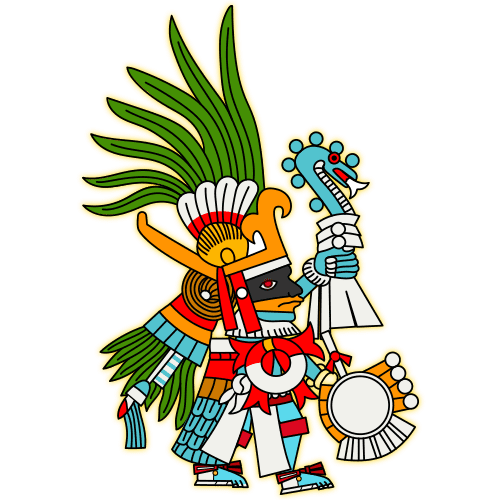

Mexikah: un juego histórico con tintes mitológicos.
Mexikah es un videojuego para móviles en el que el jugador estará a cargo de la supervivencia y la expansión del Imperio Mexica. La historia inicia en la mítica Aztlán, desde donde los aztecas migran con la guía de los dioses para llegar al Valle de México: ahí fundan México-Tenochtitlan.
En una unión entre la historia, la mitología y la religión mexicas, el jugador es testigo del conflicto entre los dioses y ayudará a que Huitzilopochtli conserve el equilibrio del Universo y mantenga vivo al Quinto Sol, alimentándolo con los corazones de sus enemigos.
Mientras los mexicas expanden su dominio, su dios se hace cada vez más poderoso para combatir a la oscuridad que acecha el mundo.
Para la creación del universo de Mexikah, el equipo de Bucéfalo Games realizó una amplia investigación histórica, de la religión mexica y de sus mitos sobre la creación del mundo. Asimismo, se consultó bibliografía especializada y las reproducciones de los códices existentes para recrear el aspecto de la vida de aquella época, visitamos museos de sitio y zonas arqueológicas, y contamos con la valiosa asesoría de arqueólogos y otros expertos.